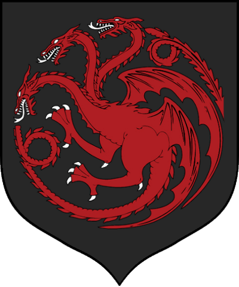

House Stark
of
Winterfell

House Stark of Winterfell is one of the Great Houses of Westeros and the principal noble house of the north. In days of old they ruled as Kings of Winter, but since Aegon's Conquest they have been Wardens of the North and ruled as Lords of Winterfell. Their seat, Winterfell, is an ancient castle renowned for its strength.
Their sigil is a grey direwolf racing across a field of white. Their words are "Winter is Coming", one of only a few house mottoes to be a warning rather than a boast.[1] Several of the POV characters of A Song of Ice and Fire are members of House Stark.
Aside from the Karstarks of Karhold, the Starks of Winterfell may have other, distant relatives in the north. White Harbor and Barrowton are considered to be likely options.[2] Some younger Starks have also held vassal holdfasts for the lords of Winterfell.[3]
House Targaryen
of
King's Landing

House Targaryen is a noble family of Valyrian descent who once ruled the Seven Kingdoms of Westeros. The Targaryen sigil is a three-headed dragon breathing flames, red on black.[1][2][3] The house words are "Fire and Blood".[4]
The only family of dragonlords who survived the Doom of Valyria, the Targaryens left the Valyrian Freehold twelve years before the Doom. They resided for more than a century at Dragonstone on the island of the same name, until Aegon the Conqueror and his sister-wives, Visenya and Rhaenys, began the first of the Wars of Conquest in -2 AC.
House Targaryen ruled as the Kings of the Andals, the Rhoynar, and the First Men, the Lords of the Seven Kingdoms, and the Great House of the crownlands for nearly three hundred years. Seventeen male Targaryens ruled from the Iron Throne.[N 1] The dynasty ended with the death of Aerys the Mad King during Robert's Rebellion, in which the Targaryens were overthrown and replaced by House Baratheon. The two surviving children of Aerys II, Viserys and Daenerys Targaryen, fled into exile, and have resided in the Free Cities of Essos ever since.
House Lannister
of
Casterly Rock

House Lannister of Casterly Rock is one of the Great Houses of Seven Kingdoms, and the principal house of the westerlands. Their seat is Casterly Rock, though another branch exists that is based in nearby Lannisport. Their sigil is a golden lion on a field of crimson.[1] Their official motto is "Hear Me Roar!" However, their unofficial motto, equally well known, is "A Lannister always pays his debts."[2][3] The Warden of the West is a Lannister by tradition.
Fair-haired, tall, and handsome, the Lannisters are the blood of Andal adventurers who carved out a mighty kingdom in the western hills and valleys.
The current Lord of Casterly Rock is Tywin Lannister, whose daughter Cersei is the queen of King Robert I Baratheon, while her twin, Ser Jaime, is a knight of Robert's Kingsguard. Tywin's youngest child is Tyrion, a dwarf. Members of the family tend to have golden hair and emerald green eyes.[6]
House Tyrell
of
Highgarden

House Tyrell of Highgarden is one of the Great Houses of the Seven Kingdoms, being Lords Paramount of the Mander and the liege lords of the Reach. A large, wealthy house, its wealth is only surpassed among the Great Houses by House Lannister, and the Tyrells can field the greatest armies. Additionally, if they call the ships of the Redwyne fleet, the lords of the Shield Islands, and the coastal lords, they can command a navy that equals if not surpasses the royal fleet of King's Landing.
Highgarden is an ancient seat of rule and the heart of chivalry in the Seven Kingdoms;[1] the Tyrells style themselves 'Defenders of the Marches' and 'High Marshals of the Reach', and traditionally, they have been Wardens of the South in addition to Lords Paramount of the Mander. Their sigil is a golden rose on a green field, and their words are "Growing Strong".[2] Members of the family tend to have curly brown hair[2][3][4] and brown eyes.[5][4]
House Tully
of
Riverrun

House Tully of Riverrun is one of the Great Houses of the Seven Kingdoms. Lord Hoster Tully, the Lord Paramount of the Trident, rules over the riverlands from the Tully seat of Riverrun. Their sigil is a silver trout leaping on a striped field of blue and mud red, and their house words are "Family, Duty, Honor."[1]
House Greyjoy
of
Pyke

House Greyjoy of Pyke is one of the Great Houses of Westeros. It rules over the Iron Islands, a harsh and bleak collection of forbidding islands off the west coast of Westeros, from the Seastone Chair in the castle of Pyke on the island of the same name. The head of the family is traditionally known as the Lord Reaper of Pyke. Their sigil is a golden kraken on a black field, and their house motto is "We Do Not Sow."[3][4] Members of the family tend to be attractive and well-built, with black hair.